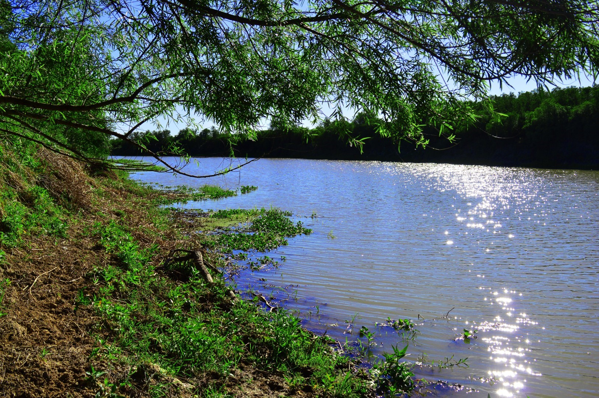

 Disfruta el Rio El café es la bebida que se obtiene a partir de los granos tostados y molidos de los frutos de la planta del café (cafeto); es altamente estimulante por su contenido de cafeína,1 una sustancia psicoactiva.2 Este producto es uno de los más comercializados del mundo y una de las tres bebidas más consumidas del mundo. Mas Información
Saborea Sauce Viejo Preparar un café que emocione incluso al cafetero más exigente es cuestión de, primero, asegurarse de que hay una cafetera italiana (o moka) en casa y, segundo, aceptar que no se puede hacer todo de una vez. Mas Información
Conoce la Historia de Sauce Viejo Aunque durante muchos años fue estigmatizado y asociado con algunas enfermedades, los beneficios del café se han confirmado en estudios científicos de todo el mundo en los últimos 20 años. Hoy, hasta los cardiólogos se lo recomiendan a sus pacientes, algo impensado en otras épocas. Mas Información